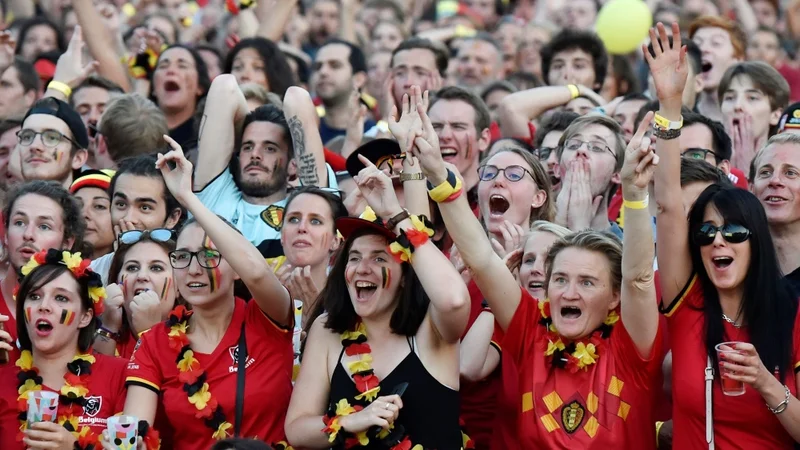
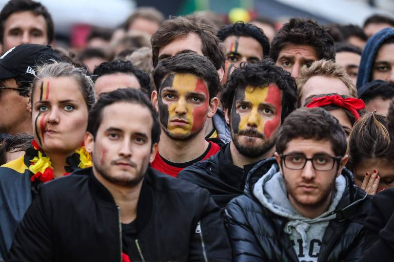

O Canadá será uma das três nações-sede da Copa do Mundo FIFA 2026, participando da organização do maior torneio da história, com 48 seleções. O país receberá partidas em Toronto e Vancouver, reforçando seu papel no crescimento do futebol na América do Norte. Além da infraestrutura moderna, o Canadá investiu em transporte, turismo e tecnologia para receber milhões de visitantes durante o evento.
PAÍS-SEDE
O papel do Canadá
na copa do
Mundo 2026
Pela primeira vez na história, o Canadá sediará partidas de uma Copa do Mundo masculina. O país dividirá a organização com os Estados Unidos e o México, recebendo jogos da fase de grupos e do mata-mata. O objetivo é consolidar o crescimento do futebol canadense e ampliar a visibilidade internacional do país.
Toronto
A cidade receberá partidas no BMO Field, estádio que passou por ampliações para atender aos padrões da FIFA e aumentar sua capacidade para o torneio.
Vancouver
O BC Place será outro palco da competição. Com cobertura retrátil e infraestrutura moderna, o estádio é considerado um dos mais avançados do país.


Destaques da organização
01
O Canadá receberá partidas da Copa do Mundo masculina pela primeira vez em sua história.
02
Toronto e Vancouver foram escolhidas pela FIFA como cidades-sede devido à infraestrutura esportiva e capacidade turística.
03
O torneio deve atrair milhões de visitantes e gerar impacto econômico significativo para hotéis, restaurantes e serviços.
04
A Copa de 2026 representa uma oportunidade para expandir ainda mais a popularidade do futebol entre os canadenses.
Detalhes
culturais do país